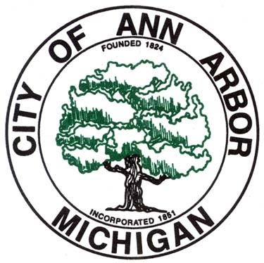

The Student Advisory Council for the City of Ann Arbor aims
to diversify perspectives within the Ann Arbor community by
discussing local issues amongst active youth members and
presenting our perspectives to the Ann Arbor City Council. Our
organization was established on January 17, 2017. Since then,
we have expanded our efficiency, ideas and membership. We
discuss prominent issues in our community that affect students
and the youth such as public safety, student-community relations
,
city housing and homelessness, etc. Our council consists of a wide
variety of members including students from Ann Arbor area schools,
students appointed from the University of Michigan Rakham Student
Government and students appointed from the University of Michigan
Central Student Government.
.